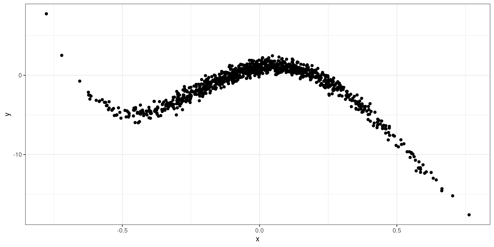
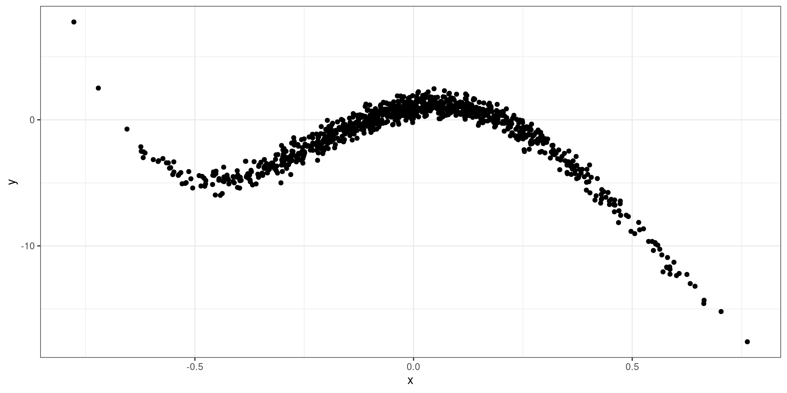
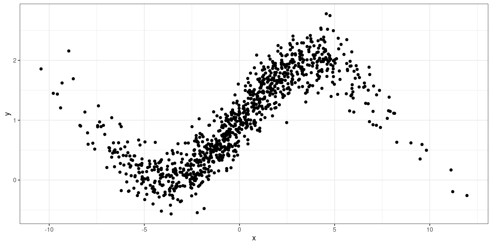
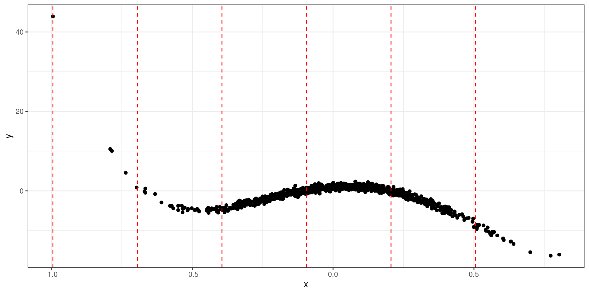
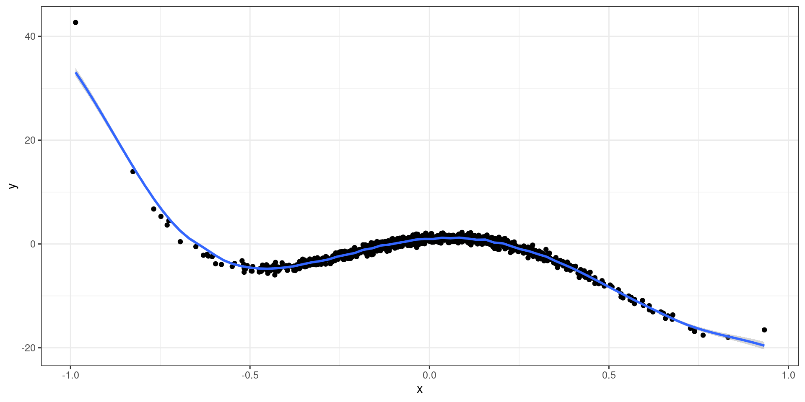

Code
library(tidyverse)
x <- rnorm(1000, sd = 0.25)
y <- 1 + 5.3 * x - 45 * x^2 - 35.5 * x^3 + 60 * x^4 + rnorm(1000, sd = 0.5)
ggplot(tibble(x=x, y=y), aes(x,y)) + geom_point() + theme_bw()
library(tidyverse)
x <- rnorm(1000, sd = 0.25)
y <- 1 + 5.3 * x - 45 * x^2 - 35.5 * x^3 + 60 * x^4 + rnorm(1000, sd = 0.5)
ggplot(tibble(x=x, y=y), aes(x,y)) + geom_point() + theme_bw()
library(tidyverse)
x <- rnorm(1000, sd = 3.5)
y <- 1 + sinpi(x/8) + rnorm(1000, sd = 0.25)
ggplot(tibble(x=x, y=y), aes(x,y)) + geom_point() + theme_bw()
For \(L\) knots:
\[ Y = \beta_0 + \sum^p_{j=1}x^j\beta_j + \sum_{l=1}^L \beta_{p+l}(x - \xi_l)^p_+ + \varepsilon \]
A smoothing (penalty) parameter will allow us to specify a large number of knots to grid up the range of X.
The smoothing parameter will will force the effect of certain knots to zero that are not relevant.
As long as we choose a high number of knots (20-30), it will properly model the data without the worry of overfitting.
The smoothing parameter can be estimated by using a cross-validation approach and identifying the which values lowers the MSE.
\[ \sum^n_{i=1}\{Y_i-g(X_i)\}^2 + \lambda\int g^{\prime\prime}(t)^2dt \]
smooth.spline(x, # Vector of predictor
y, # Vector of outcome
cv = TRUE, # Indicates to use LOOCV
nknots) # number of knots; can use defaultFit a smoothing spline model with the following simulated data. Search through the help documentation to print out \(\lambda\). What is the MSE?
library(tidyverse)
x <- rnorm(1000, sd = 0.25)
y <- 1 + 5.3 * x - 45 * x^2 - 35.5 * x^3 + 60 * x^4 + rnorm(1000, sd = 0.5)Local models will construct a curve to model the data based on a set of given grid points.
The grid points are selected by taking the range of X and choosing values that are equidistant from each other in X.
At each grid point, fit a model based on the data points within its neighborhood.
Data points closer to each grid point will have more importance than data points further away.
x <- rnorm(1000, sd = 0.25)
y <- 1 + 5.3 * x - 45 * x^2 - 35.5 * x^3 + 60 * x^4 + rnorm(1000, sd = 0.5)
xx <- seq(from = range(x)[1], to = range(x)[2], by = 0.3)
ggplot(tibble(x=x, y=y), aes(x,y)) +
geom_point() +
geom_vline(xintercept = xx, col = "red", lty = 2) +
theme_bw()
The importance of a data point to a grid point is determined by the distance between the two points.
If the distance is small, the data point is more important.
We must assign a numerical value to the importance. Known as weight.
Weights can be obtained using a kernel function.
\[ K(X_i, x_0) = w_i = 3/4\{1-(X_i-x_0)^2\} \]
\[ K(X_i, x_0) = w_i = \frac{1}{\sqrt{2\pi}}\exp\{-(X_i-x_0)^2/2\} \]
\[ K(X_i, x_0) = w_i = \{1-|X_i-x_0|\} \]
For each grid point \(x_0\), find the weighted mean:
\[ f(x_0) = \sum^n_{i=1} w_i X_i \]
x <- rnorm(1000, sd = 0.25)
y <- 1 + 5.3 * x - 45 * x^2 - 35.5 * x^3 + 60 * x^4 + rnorm(1000, sd = 0.5)
ggplot(tibble(x=x, y=y), aes(x,y)) +
geom_point() +
stat_smooth(method = stats::loess,
method.args = list(degree = 0,
span = 0.05)) +
theme_bw()
For each grid point \(x_0\), it can be modeled with
\[ \hat f(x_0)= \hat \beta_0 + \hat\beta_1 x_0 \] Estimated via:
\[ \sum^n_{i=1}\{Y_i - \hat f(X_i)\}^2w_i \]
x <- rnorm(1000, sd = 0.25)
y <- 1 + 5.3 * x - 45 * x^2 - 35.5 * x^3 + 60 * x^4 + rnorm(1000, sd = 0.5)
ggplot(tibble(x=x, y=y), aes(x,y)) +
geom_point() +
stat_smooth(method = stats::loess,
method.args = list(degree = 1,
span = 0.05)) +
theme_bw()
Local Regression can be conducted via the loess() function
loess(y ~ x,
data,
span,
degree = 0)loess(y ~ x,
data,
span,
degree = 1)Fit a Local Linear model with the following simulated data. What is the MSE?
library(tidyverse)
x <- rnorm(1000, sd = 0.25)
y <- 1 + 5.3 * x - 45 * x^2 - 35.5 * x^3 + 60 * x^4 + rnorm(1000, sd = 0.5)Generalized Additive Models extends the nonparametric models to include more than one predictor to explain the outcome Y.
\[ Y = \beta_0 + f_1(X_1) + f_2(X_2) + \cdots + f_k(X_k) + \varepsilon \]
\[ Y = \beta_0 + \sum^k_{j=1} f_j(X_j) +\varepsilon \]
Each \(\hat f_j\) can be estimated using an approach mentioned before.
\[ \hat Y = \hat \beta_0 + \sum^k_{j=1} \hat f_j(X_j) \]
Each \(hat f_j\) can be estimated differently from other predictor functions.
GAMs can be extended to model outcome variables that do not follow a normal distribution.
\[ g(\hat Y) = \hat \beta_0 + \sum^k_{j=1} \hat f_j(X_j) \]
The gam package provides a set of functions to fit a GAM for multiple predictor variables
library(gam)
gam(y ~ f_1 + f_2 + ...,
family,
data)Using mtcars, fit a GAM with mpg as an outcome variable with 3 or 4 predictors. Use different types of functions to model the predictors.
Fit the data using the simulated data below:
x <- rnorm(1000)
y <- rnorm(1000, mean =4)
mu <- exp(-2 + boot::inv.logit(x) + sqrt(y+15))
z <- rpois(1000, mu)